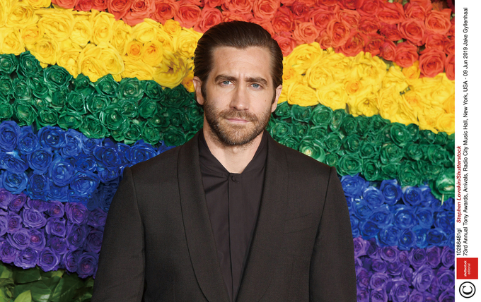

드니 빌뇌브 감독과 제이크 질렌홀이 요 네스뵈의 소설 아들을 'HBO'에서 시리즈물로 함께 만든다 外
글 씨네21 취재팀 2020-10-23
매튜 매커너헤이, 휴 그랜트 주연의 젠틀맨이 올해 북미에서 개봉한 인디영화 중 최고 수익을 기록했다
2위는 러셀 크로 주연의 언힌지드, 3위는 그레텔과 헨젤, 4위는 공포영화 더 보이2: 돌아온 브람스, 5위는 애니아 테일러조이 주연의 엠마다.11월 3일 미국 대선을 앞두고 어벤져스의 배우들이 조 바이든 후보를 지지하는 기금모금 행사를 온라인으로 개최했다
스칼렛 요한슨, 크리스 에반스, 마크 러팔로, 조이 살다나, 조 루소·앤서니 루소 감독 등이 참여했다. 이날 화상 모임에 참석한 카멀라 해리스 민주당 부통령 후보는 트럼프 대통령을 악당 타노스에 빗대기도 했다.드니 빌뇌브 감독과 제이크 질렌홀이 요 네스뵈의 소설 아들을 HBO에서 시리즈물로 함께 만든다
에너미 프리즈너스 이후 오랜만의 협업이다. 원작은 범죄로 오염된 오슬로를 배경으로 한 탈옥수 소니의 이야기로, 제이크 질렌홀은 연기뿐 아니라 제작에도 참여한다.